一、产品与核心闭环
ResetSelf 把「一日身份重构」做成了一套本地优先的日常系统。
它不靠打卡与打分，而是用四段能力把「改变」变得可追溯：
- 探索：晨间用 14 个问题做心理挖掘，写下的是「探索原稿」，不是一句结论。
- 观察：白天用 6 个示例时点加 3 条追加追问，拿真实行为去核对晨间的解释。
- 综合：晚间用 11 步向导，把观察整理成明天可以尝试的方向与最小启动行动。
- 接住与回流：随时可用的 SOS 急救接住最强烈的拉扯；每日校验与行动反馈把结果沉淀成样本。
核心闭环
| 阶段 | 入口 | 你会做什么 |
|---|---|---|
| ① 降噪准备 | 认知真空准备区 | 定专注时长（60 / 90 / 120 分钟）、降噪偏好、温和提醒与六个日间打断时点 |
| ② 晨间探索 | 晨间探索页 | 回答 14 个心理挖掘问题，写成探索原稿，可标记「待回看」 |
| ③ 日间观察 | 日间打断页 | 在示例时点用真实行为核对晨间的解释，并粗略归类 |
| ④ 晚间综合 | 晚间综合向导 | 11 步把观察整理成反愿景、新身份、一年／一月目标与最小启动行动 |
| ⑤ 日常对照 | 首页 | 看当前核心身份、最小启动行动、反愿景赌注与今日状态 |
| ⑥ 状态校准 | 每日校验 | 三档选一：完全匹配 / 部分偏离 / 完全偏离 |
| ⑦ 行动反馈 | 行动反馈页 | 尝试了什么 → 发生了什么 → 得到什么认识 → 下一次调整什么 |
| ⑧ 样本沉淀 | 惯性样本库 | 查看最近 7 天的来源分布、高频偏离模式与正向回流信号 |
二、5 分钟快速上手
第一次打开应用，按下面几步走完，就能进入日常使用状态。
- 打开应用，进入欢迎页启动页会先完成本地数据库与流程状态的初始化（「正在初始化本地数据和流程状态...」），随后自动进入欢迎页。欢迎页有两个入口：先看认知真空准备区与开启 24h 重构向导。
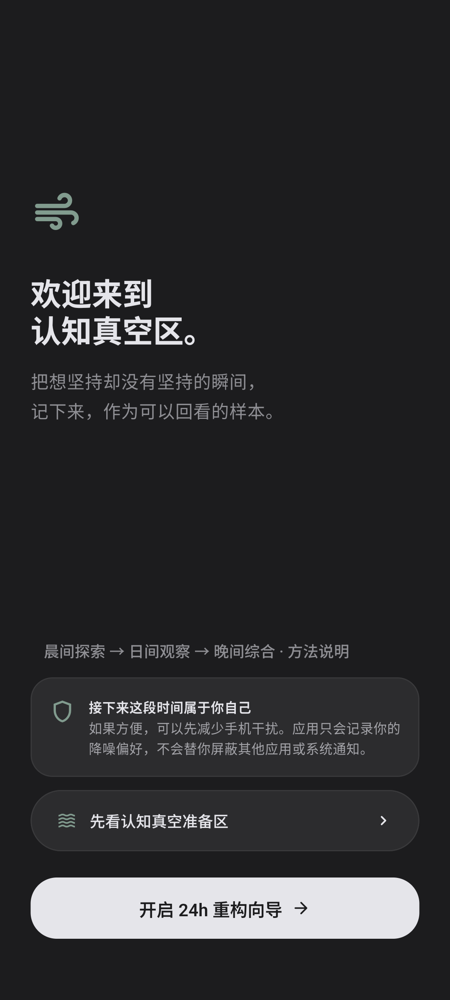
欢迎页：先看方法说明，再决定从准备区还是直接开始 - （可选）先读一次方法说明点欢迎页上的「晨间探索 → 日间观察 → 晚间综合 · 方法说明」，可以看到这套方法的来源与产品适配说明，也可以复制原文链接。
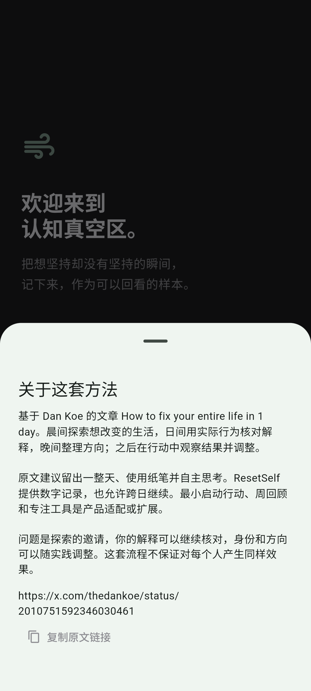
方法说明弹层：来源、适配说明与原链接 - 进认知真空准备区，定好节奏设定建议专注时段（60 / 90 / 120 分钟）、降噪状态、温和提醒、日间打断与提醒时间。所有改动都会即时保存。
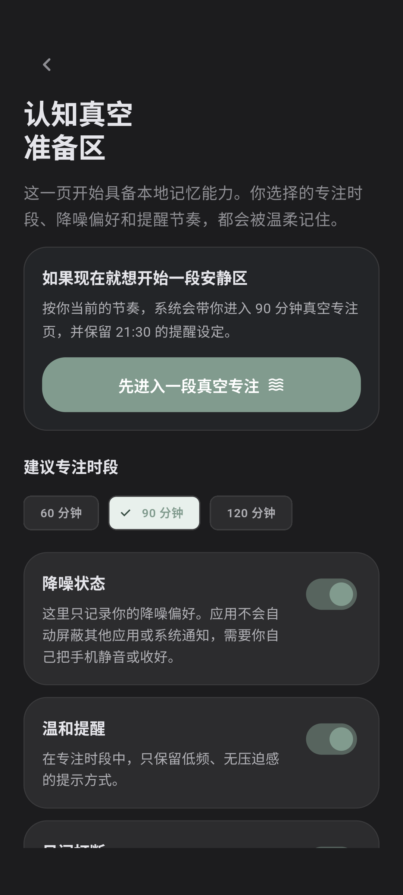
准备区顶部：快速进入专注卡 + 专注时长 - 进入晨间探索，回答 14 个问题这些问题是用来帮你产生答案的，不是让你直接给出结论。答不出可以先跳过，也可以把某题标成「待回看」，之后再补。
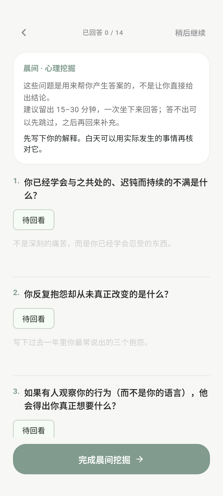
晨间探索：14 问 + 可标记「待回看」 - 白天做几次日间观察在示例时点停下来，写下此刻的觉察，并粗略归类为「成长性行为 / 逃避性行为 / 其他／待核对」。
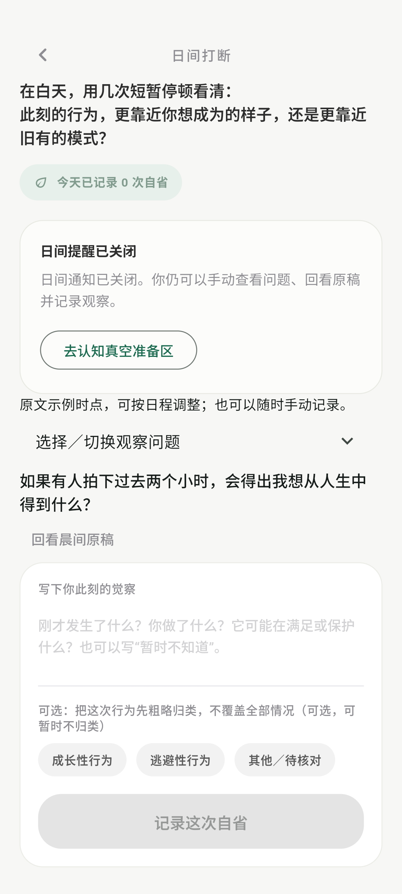
日间打断：时点、当次问题与手动记录入口 - 晚上走完 11 步晚间综合按「理解当前模式 → 选择想建设的生活 → 安排行动与边界」三个阶段，把观察整理成一句可确认的方向。
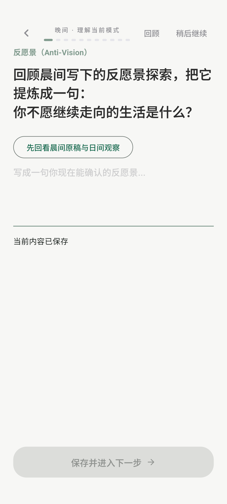
晚间综合第 1 步：反愿景（Anti-Vision） - 每天回到首页做一次今日校验首页会常驻你的当前身份与最小启动行动；点「进行今日校验」，在「完全匹配 / 部分偏离 / 完全偏离」中选最接近的一档。
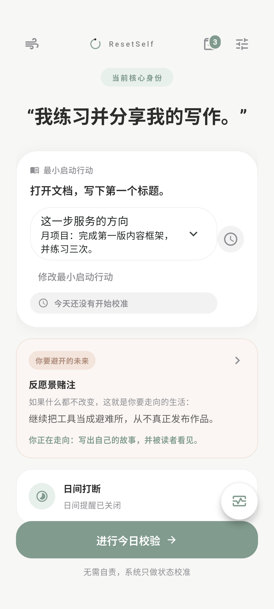
首页顶部：当前核心身份、最小启动行动与今日状态
三、页面详解
下面按你实际会走到的顺序，逐页说明用途、可操作项与页面文案。
1. 启动页与欢迎页
启动页（/bootstrap）只做一件事：初始化本地数据库与流程状态，文案是「正在初始化本地数据和流程状态...」。若初始化失败，会提示「初始化失败，请重试数据库与本地配置。」并提供重新初始化按钮。
初始化完成后会自动判断：已经完成过首次重构 → 直达首页；否则 → 进入欢迎页。
欢迎页（/welcome）
- 主标题：欢迎来到认知真空区。
- 副标题：把想坚持却没有坚持的瞬间，记下来，作为可以回看的样本。
- 方法说明入口：晨间探索 → 日间观察 → 晚间综合 · 方法说明。
- 提示卡「接下来这段时间属于你自己」：如果方便，可以先减少手机干扰。应用只会记录你的降噪偏好，不会替你屏蔽其他应用或系统通知。
- 两个入口按钮：先看认知真空准备区（进入
/vacuum）、开启 24h 重构向导（进入/restructure/morning）。
方法说明弹层
标题「关于这套方法」，正文说明这套方法来自 Dan Koe 的原文，并明确写出产品做了哪些适配或扩展；底部是原文链接与复制原文链接按钮，复制成功会提示「来源链接已复制」。
2. 认知真空准备区
路由 /vacuum。标题是「认知真空准备区」，页面说明：这一页开始具备本地记忆能力。你选择的专注时段、降噪偏好和提醒节奏，都会被温柔记住。所有改动即时保存，保存中会显示「正在记住这次真空模式偏好...」。
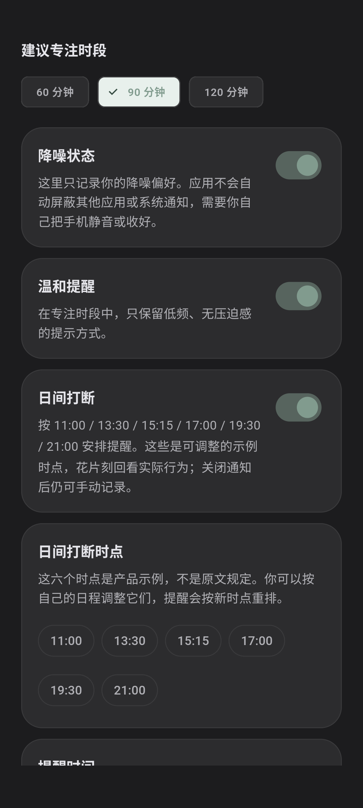
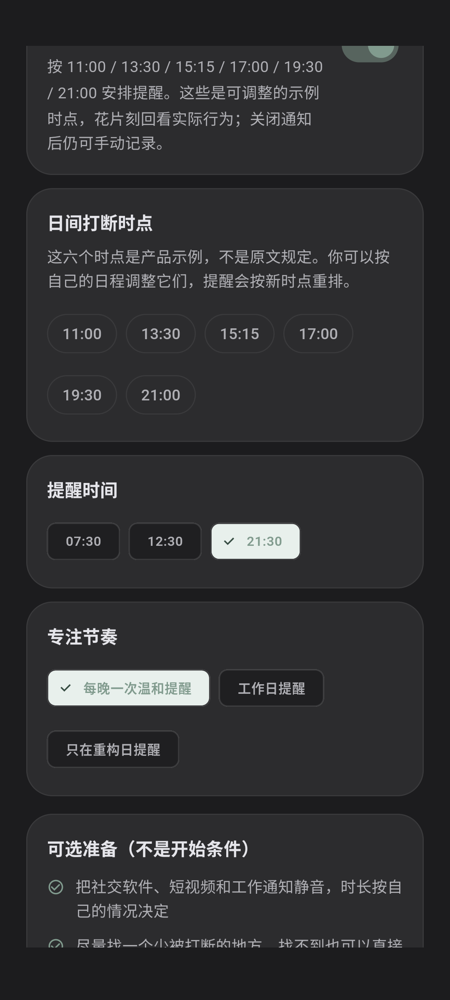
可以调整的六项
| 项目 | 可选项 | 说明 |
|---|---|---|
| 建议专注时段 | 60 / 90 / 120 分钟 | 决定真空专注页的安静区长度 |
| 降噪状态 | 开 / 关 | 这里只记录你的降噪偏好；应用不会自动屏蔽其他应用或系统通知 |
| 温和提醒 | 开 / 关 | 在专注时段中只保留低频、无压迫感的提示方式 |
| 日间打断 | 开 / 关 | 按你设定的时点安排提醒；关闭通知后仍可手动记录 |
| 日间打断时点 | 默认 11:00 / 13:30 / 15:15 / 17:00 / 19:30 / 21:00 | 这六个时点是产品示例，不是原文规定；可逐个改动，提醒会按新时点重排 |
| 提醒时间 | 07:30 / 12:30 / 21:30 | 温和提醒的落点时间 |
| 专注节奏 | 每晚一次温和提醒 / 工作日提醒 / 只在重构日提醒 | 决定提醒出现的频率 |
页面上的两类清单
底部两个入口
- 先进入一段真空专注：跳转真空专注页
/vacuum/focus。 - 我准备好了，进入 24h 重构：跳转晨间探索页
/restructure/morning。
3. 真空专注页
路由 /vacuum/focus。未开始时标题是「准备开始专注」，开始后变成「专注进行中」，并显示「预计还有 N 分钟」。首页和这一页会同步显示同一段专注状态。
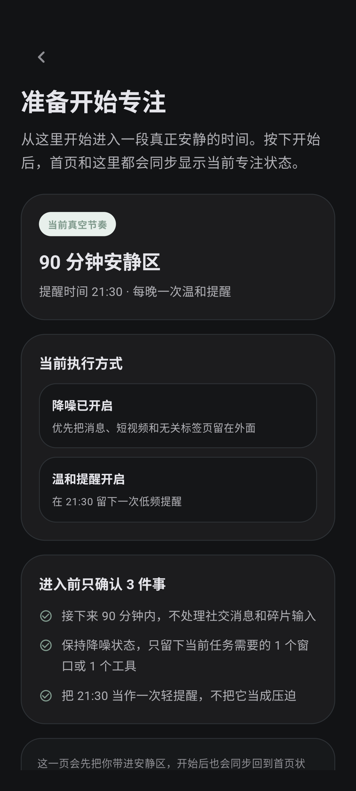
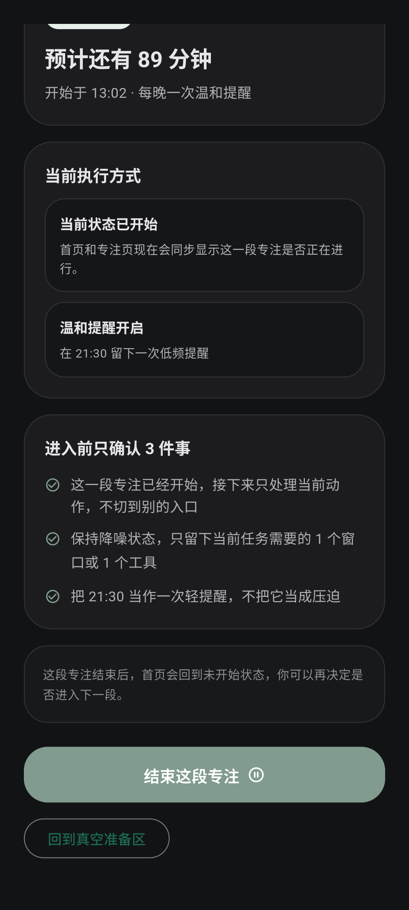
页面上有什么
- 当前真空节奏卡：未开始时显示「N 分钟安静区」与「提醒时间 xx:xx · 节奏」；进行中显示「预计还有 N 分钟」与「开始于 xx:xx · 节奏」。
- 当前执行方式卡：用状态标签展示「降噪已开启 / 手动降噪中 / 当前状态已开始」以及「温和提醒开启 / 提醒已关闭」，每个标签下面都有一句对应的说明。
- 进入前只确认 3 件事：按当前设置动态生成，例如「接下来 90 分钟内，不处理社交消息和碎片输入」。
- 主按钮 开始这段专注 / 结束这段专注；未开始时另有次按钮 继续进入 24h 重构；底部返回入口是先回首页（未完成首次重构时为「回到真空准备区」）。
4. 晨间探索
路由 /restructure/morning。页面顶部显示「已回答 N / 14」，右上角是稍后继续。这一段回答的是探索原稿——用来帮你产生答案，而不是让你直接给出结论。
页面说明：这些问题是用来帮你产生答案的，不是让你直接给出结论。建议留出 15–30 分钟，一次坐下来回答；答不出可以先跳过，之后再回来补充。
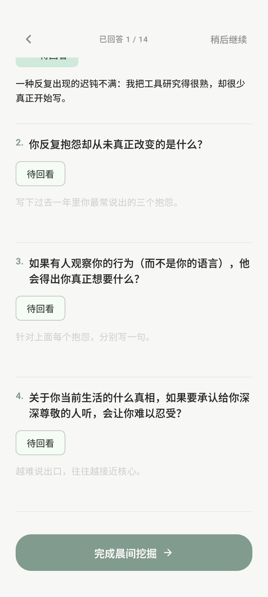
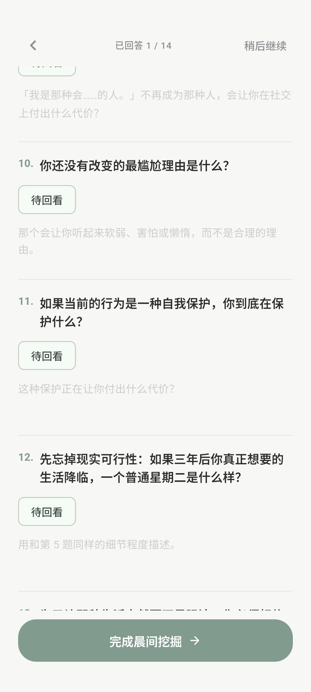
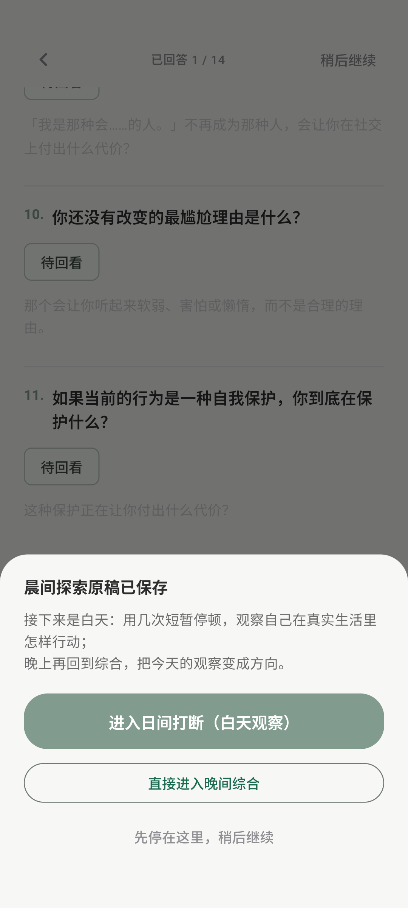
14 个问题
| # | 问题 | 输入提示 |
|---|---|---|
| 1 | 你已经学会与之共处的、迟钝而持续的不满是什么？ | 不是深刻的痛苦，而是你已经学会忍受的东西。 |
| 2 | 你反复抱怨却从未真正改变的是什么？ | 写下过去一年里你最常说出的三个抱怨。 |
| 3 | 如果有人观察你的行为（而不是你的语言），他会得出你真正想要什么？ | 针对上面每个抱怨，分别写一句。 |
| 4 | 关于你当前生活的什么真相，如果要承认给你深深尊敬的人听，会让你难以忍受？ | 越难说出口，往往越接近核心。 |
| 5 | 如果未来五年绝对没有任何改变，描述一个普通的星期二。 | 在哪里醒来？身体感觉如何？第一个念头是什么？谁在身边？9 点到 18 点做什么？22 点感觉如何？ |
| 6 | 把时间拉到十年，你错过了什么？ | 哪些机会关闭了？谁放弃了你？当你不在场时，人们会怎么谈论你？ |
| 7 | 你走到了生命尽头，过的是安全版本的人生，从未打破模式。代价是什么？ | 你从未允许自己感受、尝试或成为什么？ |
| 8 | 你生活中谁已经在过你刚刚描述的未来？ | 有谁在同一轨道上领先你五年、十年、二十年？想到自己会成为他们，你有什么感觉？ |
| 9 | 为了真正改变，你必须放弃什么身份？ | 「我是那种会……的人。」不再成为那种人，会让你在社交上付出什么代价？ |
| 10 | 你还没有改变的最尴尬理由是什么？ | 那个会让你听起来软弱、害怕或懒惰，而不是合理的理由。 |
| 11 | 如果当前的行为是一种自我保护，你到底在保护什么？ | 这种保护正在让你付出什么代价？ |
| 12 | 先忘掉现实可行性：如果三年后你真正想要的生活降临，一个普通星期二是什么样？ | 用和第 5 题同样的细节程度描述。 |
| 13 | 为了让那种生活自然而不是强迫，你必须相信关于自己的什么？ | 写下身份陈述：「我是那种会……的人。」 |
| 14 | 如果你已经是那个人，这周你会做的一件事是什么？ | 一件具体、本周内就能开始的事。 |
怎么用这一页
- 逐题写解释：每题提示是「先写下你的解释。白天可以用实际发生的事情再核对它。」
- 标记「待回看」：每题右侧的 待回看 标签可以把这题标出来，晚间综合时再回看。
- 草稿自动保存：停笔后会自动保存，页面底部会显示「正在保存原稿…」「有待保存的改动」等状态；保存失败时提示「原稿未保存成功，内容仍在页面里，请重试。」并给出重试。
- 完成晨间挖掘：点底部主按钮后，弹出「晨间探索原稿已保存」，并给出三条岔路：进入日间打断（白天观察）、直接进入晚间综合、先停在这里，稍后继续。
5. 日间观察（日间打断）
路由 /interrupt。副标题：在白天，用几次短暂停顿看清：此刻的行为，更靠近你想成为的样子，还是更靠近旧有的模式？顶部会显示「今天已记录 N 次自省」，并注明「原文示例时点，可按日程调整；也可以随时手动记录。」
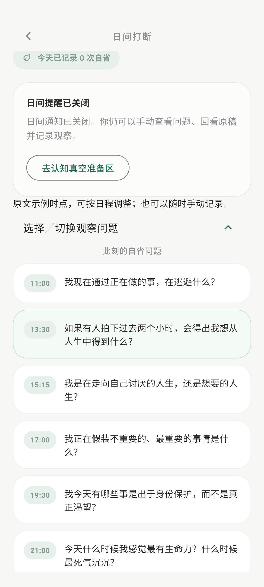
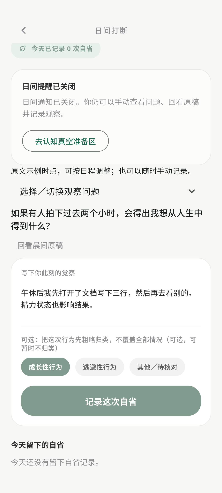
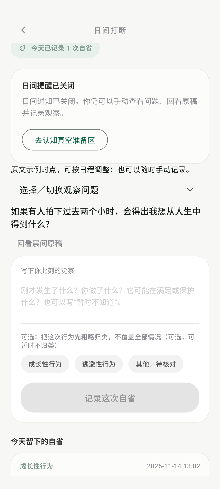
6 个主问题（示例时点）
| 时点 | 自省问题 |
|---|---|
| 11:00 | 我现在通过正在做的事，在逃避什么？ |
| 13:30 | 如果有人拍下过去两个小时，会得出我想从人生中得到什么？ |
| 15:15 | 我是在走向自己讨厌的人生，还是想要的人生？ |
| 17:00 | 我正在假装不重要的、最重要的事情是什么？ |
| 19:30 | 我今天有哪些事是出于身份保护，而不是真正渴望？ |
| 21:00 | 今天什么时候我感觉最有生命力？什么时候最死气沉沉？ |
3 条追加追问（随时可用）
| 场景 | 追问 |
|---|---|
| 通勤 · 散步 | 如果我不再需要别人把我看成那个旧身份，我的生活会发生什么改变？ |
| 慢下来时 | 我在生活的哪些地方，用生命力换取安全？ |
| 睡前 | 我想成为的那个人，最小的版本是什么？明天我就能成为吗？ |
怎么记录一次观察
- 点「选择／切换观察问题」展开问题列表，切到对应时点的问题（切换时会各题独立保存草稿）。
- 写下你此刻的觉察提示是「刚才发生了什么？你做了什么？它可能在满足或保护什么？也可以写"暂时不知道"。」
- 粗略归类（可跳过）在「成长性行为 / 逃避性行为 / 其他／待核对」里选一个，再点记录这次自省。
记录成功后显示「这次自省已经被记下来」——它不是评判，而是一条帮你看清模式出现时段的记录。记录会出现在页面下方的「今天留下的自省」列表中，同时进入惯性样本库。
6. 晚间综合向导
路由 /restructure/setup（带 ?mode=edit 时用于修改上一次的回答）。向导共 11 步，分三个阶段：理解当前模式 → 选择想建设的生活 → 安排行动与边界。顶部是 11 格进度条，右上角有回顾与稍后继续。
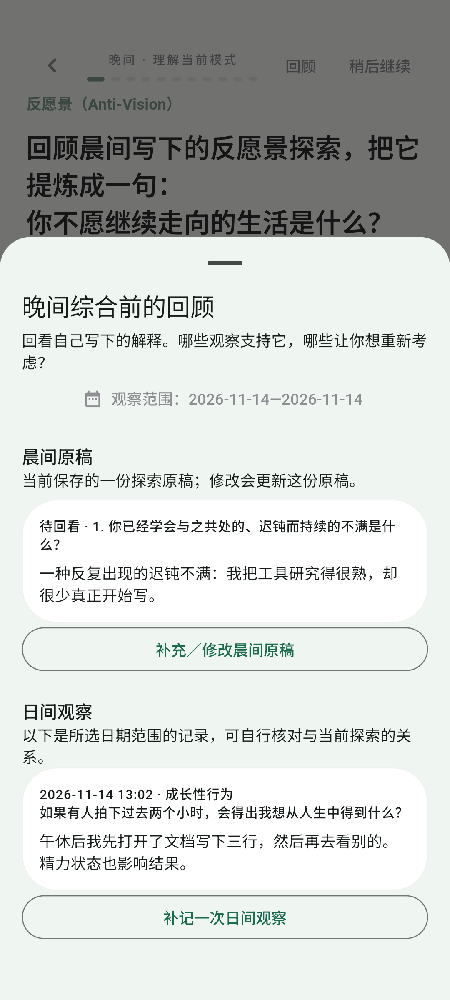
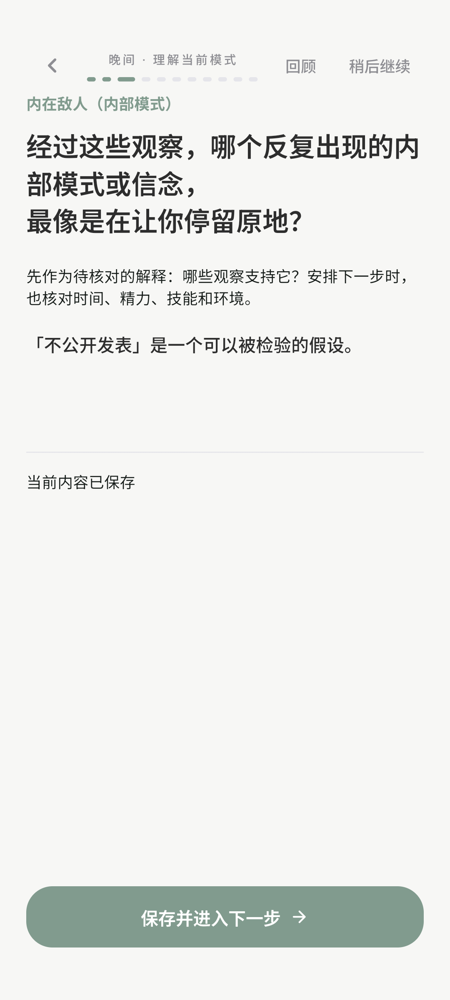
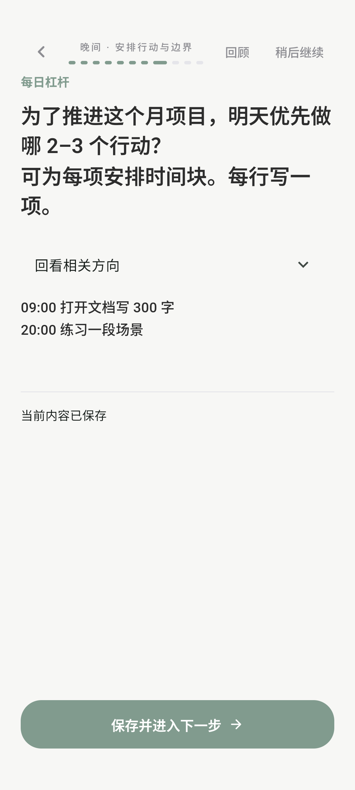
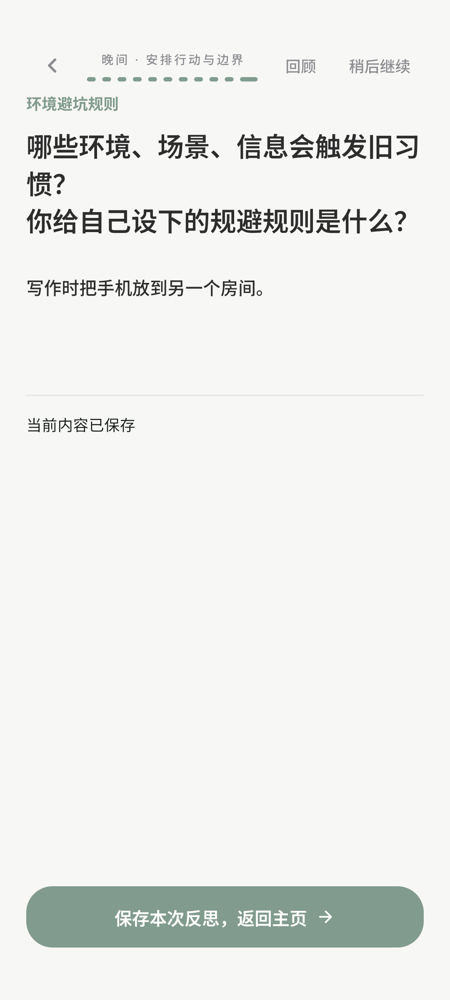
11 个问题
| # | 阶段 | 标题 | 问题 |
|---|---|---|---|
| 1 | 理解当前模式 | 反愿景（Anti-Vision） | 回顾晨间写下的反愿景探索，把它提炼成一句：你不愿继续走向的生活是什么？ |
| 2 | 理解当前模式 | 深层恐惧与自我保护 | 回看这些观察，如果某些行为是在保护自己，它们在保护什么？带来了什么，也付出了什么？ |
| 3 | 理解当前模式 | 内在敌人（内部模式） | 经过这些观察，哪个反复出现的内部模式或信念，最像是在让你停留原地？ |
| 4 | 选择想建设的生活 | 新身份叙事 | 为了让这种生活逐渐变得自然，你想以怎样的方式生活和行动？ |
| 5 | 选择想建设的生活 | 愿景 MVP | 用一句话概括你正在建设、走向什么，同时知道它还会继续演化。 |
| 6 | 安排行动与边界 | 一年镜头 | 一年后，希望有什么具体事实成立，让你看见自己正在接近想要的生活？ |
| 7 | 安排行动与边界 | 一月项目 | 为了推进这个一年目标，这个月需要学习什么、练习什么，或做出什么成果？ |
| 8 | 安排行动与边界 | 每日杠杆 | 为了推进这个月项目，明天优先做哪 2–3 个行动？可为每项安排时间块。每行写一项。 |
| 9 | 安排行动与边界 | 最小启动行动 | 从上面某一项里，缩小到此刻就能开始的那一个最小一步是什么？ |
| 10 | 安排行动与边界 | 价值约束 | 为了实现这个愿景，你不愿牺牲什么？这些边界会影响你怎样安排投入与取舍。 |
| 11 | 安排行动与边界 | 环境避坑规则 | 哪些环境、场景、信息会触发旧习惯？你给自己设下的规避规则是什么？ |
四个容易被忽略的设计
- 先回看材料：第 1 步上方有先回看晨间原稿与日间观察按钮，会展开「晚间综合前的回顾」，可切换观察日期范围、回看晨间原稿与日间观察，并可直接补充／修改晨间原稿或补记一次日间观察。
- 上下文自动带入：从第 6 步起会自动显示相关方向，例如第 8 步（每日杠杆）上方是「月项目：…」、第 9 步（最小启动行动）上方是「每日杠杆：…」，这些都可以折叠收进「回看相关方向」。
- 温和提示：第 3 步（内在敌人）会提醒「先作为待核对的解释：哪些观察支持它？」；第 4 步（新身份叙事）会提醒「身份表达可以随经验调整，不必现在就完全做到。」
- 草稿自动保存：底部状态会显示「正在保存草稿…」「有待保存的改动」「当前内容已保存」，中途退出不会丢。
按钮：非最后一步是保存并进入下一步，最后一步变成保存本次反思，返回主页（保存中显示「正在保存本次反思...」）。最后一步还会出现一个可选输入框「这次为什么调整（可选）」，提示是「哪次经历或反馈让你改变了方向？」。
7. 首页
路由 /home。首页是整个系统的中枢：上面是身份与今日状态，中间是反愿景、日间观察与行动反馈入口，下面是本周摘要、智能建议与真空节奏。
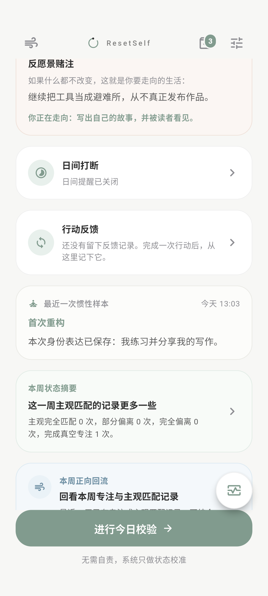
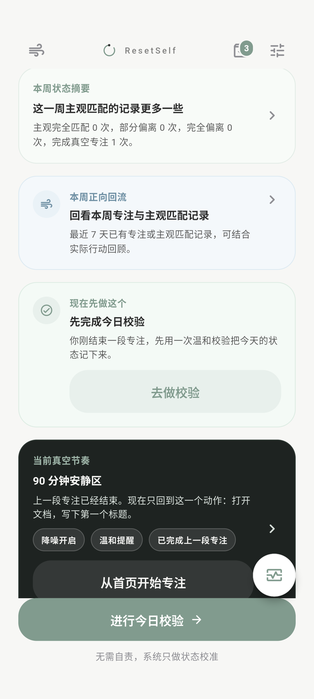
顶部三个入口
- 左上角气流图标 → 认知真空准备区（
/vacuum）。 - 右上角归档图标（带样本计数角标）→ 惯性样本库（
/insights）。 - 右上角设置图标 → 设置（
/settings）。
页面上的卡片
| 卡片 | 内容 | 点击后 |
|---|---|---|
| 当前核心身份 / 最小启动行动 | 来自晚间综合的「新身份叙事」与「最小启动行动」；卡片底部标注「这一步服务的方向」 | 修改最小启动行动（弹出编辑面板） |
| 今日状态 | 未校验 → 今天还没有开始校准；已校验 → 今天已完成校验：完全匹配 / 部分偏离 / 完全偏离 | 进行今日校验 / 重新校准今天状态（/checkin） |
| 反愿景赌注 | 如果什么都不改变，这就是你要走向的生活：…（还没写下时提示先完成一次重构） | 重构归档（/restructure） |
| 日间打断 | 今天已记录 N 次自省 / 下一个时点：xx:xx / 还没到下一个打断时点 / 日间提醒已关闭 | 日间打断（/interrupt） |
| 行动反馈 | 最近一次尝试与最近一次观察；没有记录时提示「还没有留下反馈记录。完成一次行动后，从这里记下它。」 | 行动反馈（/feedback） |
| 最近一次惯性样本 | 来源标签（SOS急救 / 每日偏离 / 首次重构 / 真空专注 / 惯性样本）+ 内容 + 时间 | — |
| 本周状态摘要 | 最近 7 天的匹配、偏离、SOS、专注统计 | 惯性样本库 |
| 本周正向回流 | 最近 7 天完全匹配与真空专注的次数 | 惯性样本库（真空专注视角） |
| 现在先做这个 | 按当前状态动态生成的建议（专注中、需校验、SOS 后、偏离后、连续匹配等十余种分支） | 对应动作（回到专注页 / 去做校验 / 看偏离记录等） |
| 当前真空节奏（深色） | 专注进行中 / N 分钟安静区、降噪与提醒状态；上一段结束时提示「上一段专注已经结束。现在只回到这一个动作：…」 | 真空专注页；也可直接开始 / 结束专注 |
右下角常驻的SOS 悬浮按钮可以随时进入急救页（/sos），不需要先回到某个入口。
8. 每日校验
路由 /checkin。标题是「今天的行为，匹配你的新身份吗？」，副标题是「无需自责，系统只做状态校准」。三个选项含义如下：
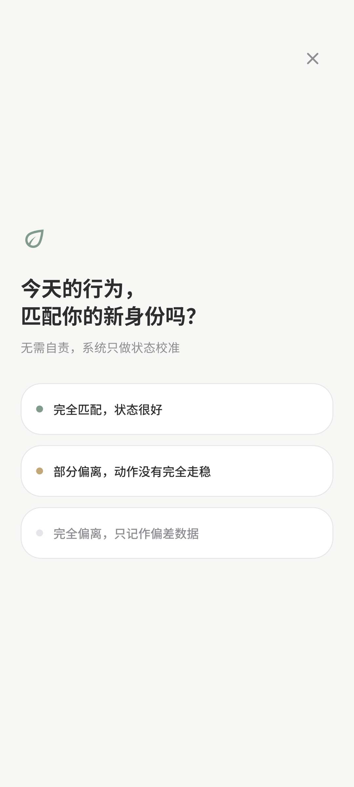
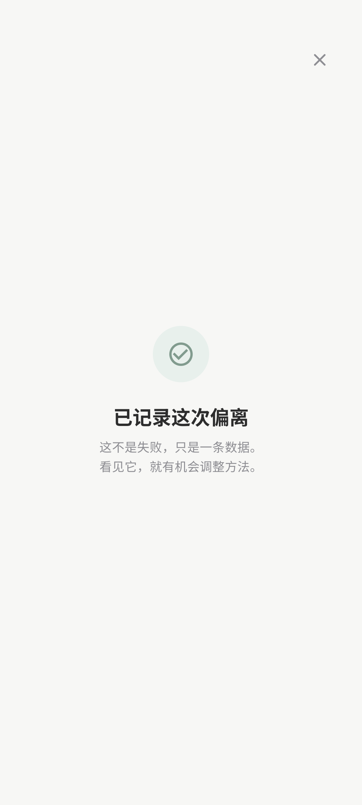
| 选项 | 提交后的反馈 | 是否生成样本 |
|---|---|---|
| 完全匹配，状态很好 | 已完成今日校验 · 你今天和新的自己站在同一边。这次匹配已经记下来了。 | 不生成 |
| 部分偏离，动作没有完全走稳 | 已记录这次偏离 · 这不是失败，只是一条数据。看见它，就有机会调整方法。 | 生成「部分偏离」样本 |
| 完全偏离，只记作偏差数据 | 已记录这次偏离 · 这次偏离已经记下来了。它不是评判，而是下一次调整方法的依据。 | 生成「完全偏离」样本 |
9. 行动反馈
路由 /feedback。副标题：回看一次行动，比较期望与实际，再决定下一次怎样尝试。可以先记录一部分。这一页对应原文建议的记录模板：尝试了什么 → 发生了什么 → 得到什么认识 → 下一次调整什么。
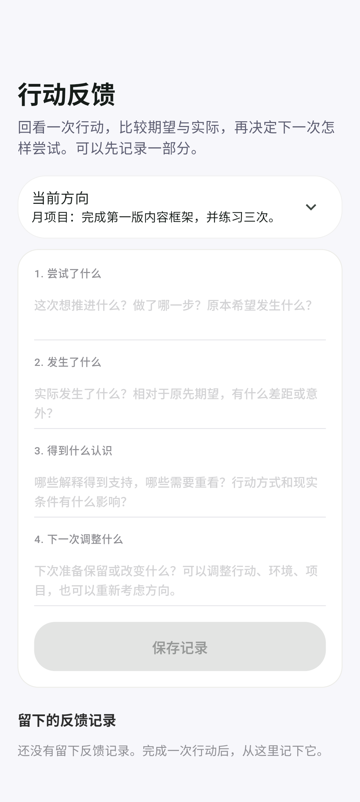
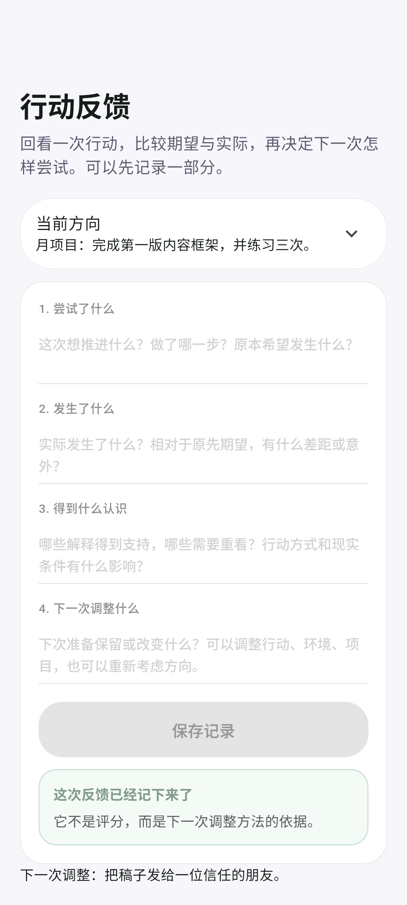
四个字段
| 字段 | 提示原文 |
|---|---|
| 1. 尝试了什么 | 这次想推进什么？做了哪一步？原本希望发生什么？ |
| 2. 发生了什么 | 实际发生了什么？相对于原先期望，有什么差距或意外？ |
| 3. 得到什么认识 | 哪些解释得到支持，哪些需要重看？行动方式和现实条件有什么影响？ |
| 4. 下一次调整什么 | 下次准备保留或改变什么？可以调整行动、环境、项目，也可以重新考虑方向。 |
- 顶部可折叠的「这次记录参考的方向」会带入当前身份与最小启动行动；没有方向时提示「开始记录时没有可用方向。仍可保存自己的尝试与观察。」
- 四个字段全部为空时不能保存；只写了一部分也可以保存。
- 保存成功后会显示「这次反馈已经记下来了 · 它不是评分，而是下一次调整方法的依据。」并在下方列出下一次调整：…，同时给出三个去处：回到首页／修改最小行动、查看／修改方向、修改最小启动行动。
- 页面底部是「留下的反馈记录」列表，每条都保留了「记录时参考的方向」。
10. SOS 急救
路由 /sos。首页右下角悬浮按钮随时可以进入。深色界面，标题是「先停一下，看看刚才发生了什么。」，正文为：原因可能来自内部状态，也可能来自现实条件。深呼吸，先记下刚才发生了什么？
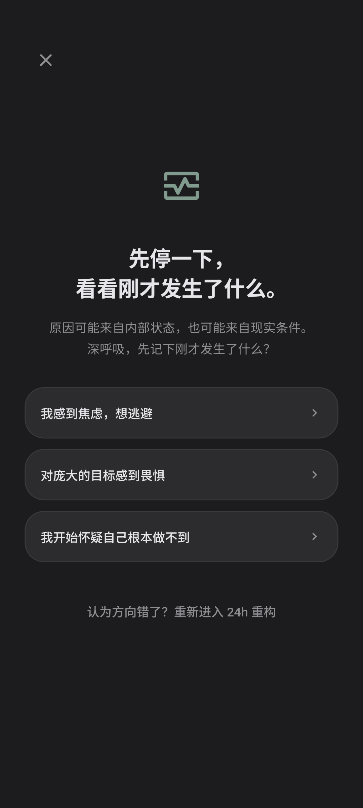
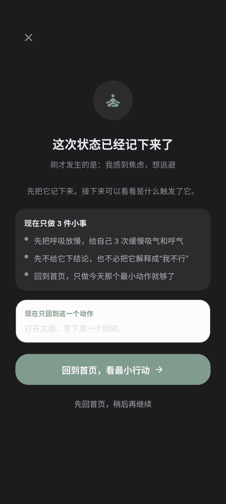
使用方式
- 在三个选项里选最接近的一个：我感到焦虑，想逃避、对庞大的目标感到畏惧、我开始怀疑自己根本做不到。
- 提交后进入完成态：显示「这次状态已经记下来了」与「刚才发生的是：你选中的选项」，并给出「现在只做 3 件小事」——先把呼吸放慢，给自己 3 次缓慢吸气和呼气 / 先不给它下结论，也不必把它解释成「我不行」 / 回到首页，只做今天那个最小动作就够了。
- 同时显示「现在只回到这一个动作」卡（来自你的最小启动行动），可用回到首页，看最小行动或先回首页，稍后再继续返回。
- 如果你认为方向本身错了，页面底部提供认为方向错了？重新进入 24h 重构入口。
11. 惯性样本库
路由 /insights。只展示最近 7 天的样本数据（页脚有说明）。页面顶部是横向筛选标签。
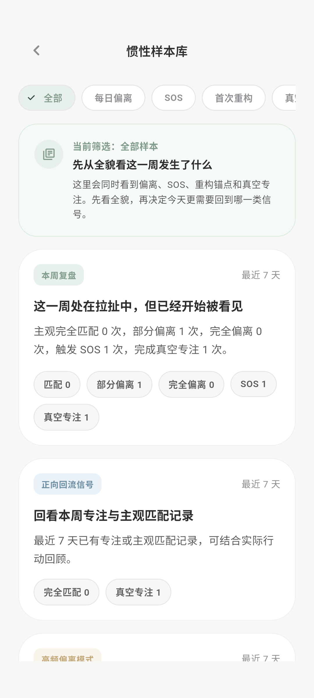
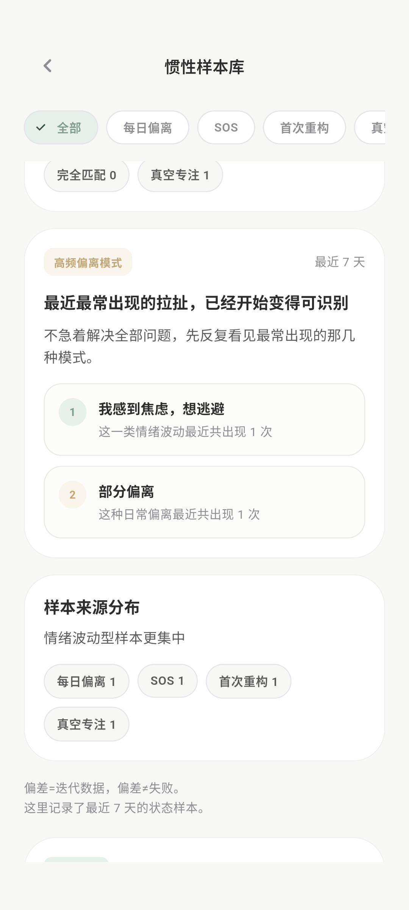
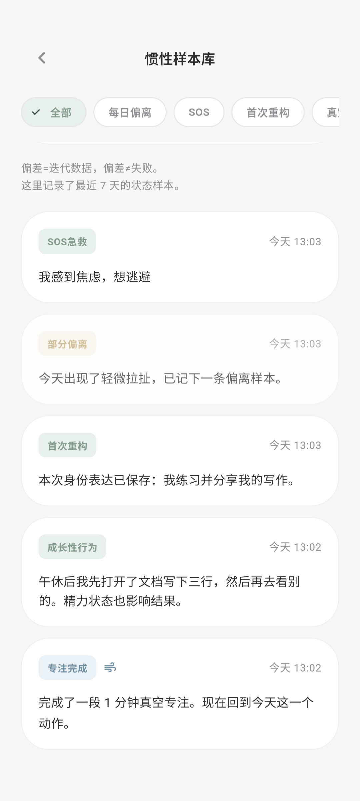
五个筛选视角
| 筛选 | 看什么 |
|---|---|
| 全部 | 同时看到偏离、SOS、重构锚点和真空专注，先看全貌 |
| 每日偏离 | 聚焦日常拉扯，识别最常发生的偏离场景，再决定把动作缩到哪里 |
| SOS | 状态波动最明显时，你依然留下来的记录 |
| 首次重构 | 身份重构留下的锚点，是你重新站回来的依据 |
| 真空专注 | 你主动把自己带回来的证据 |
切换筛选时，页面顶部会显示对应的「当前筛选」说明卡，例如全部视图下写着：偏差=迭代数据，偏差≠失败。这里记录了最近 7 天的状态样本。
页面上的统计卡
- 本周复盘：匹配 / 部分偏离 / 完全偏离 / SOS / 真空专注 的次数。
- 正向回流信号：最近 7 天完全匹配与真空专注的次数。
- 高频偏离模式：把最常出现的拉扯聚合出来；样本不足时提示「继续记录就好，样本足够时这些模式会更清楚。」
- 样本来源分布：每日偏离 / SOS / 首次重构 / 真空专注各占多少。
页面底部还有一张跟进建议卡（眉批如「回到首页前」「看完全貌之后」），按钮会把你带回当下最该做的事（回首页继续 / 去做校验 / 先去专注 / 回到重构等）。如果是从首页某个入口点进来的，顶部还会多一张入口来源卡，说明「为什么你会看到这一页」。
12. 重构归档
路由 /restructure。标题「重构归档」，副标题：把每一次身份重构留下来。这里先收纳当前锚点、历史版本和年度归档。
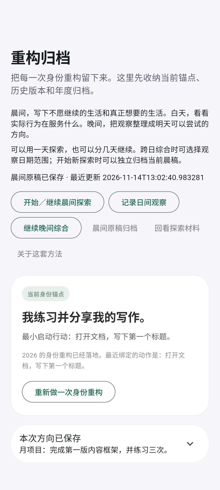
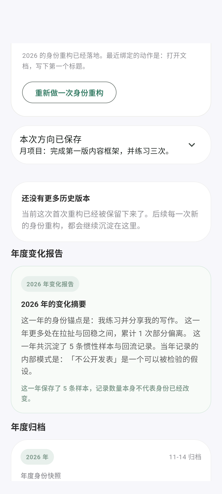
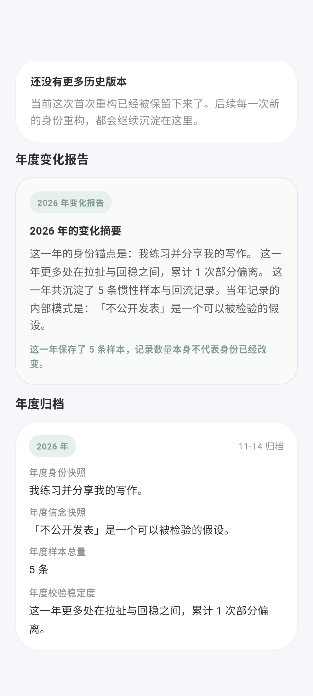
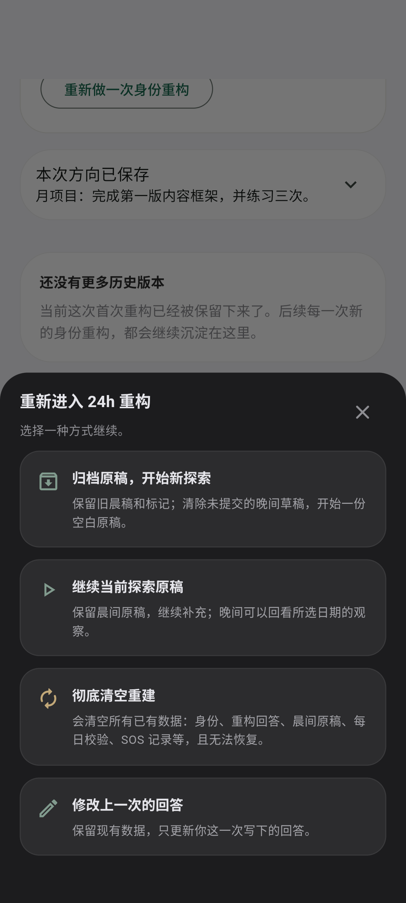
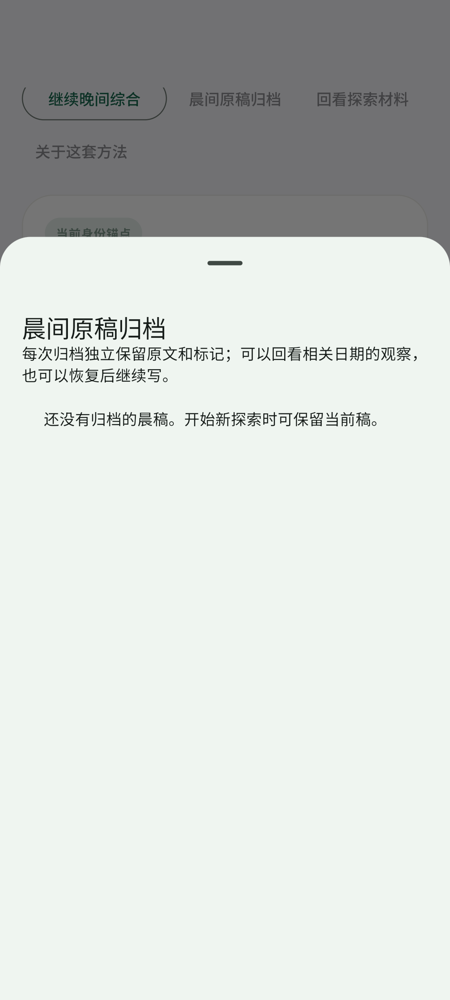
顶部六个操作入口
开始／继续晨间探索、记录日间观察、继续晚间综合、晨间原稿归档、回看探索材料、关于这套方法。
主要区块
- 当前身份锚点：显示当前身份表达与最小启动行动；尚未写入时提示「尚未保存身份表达」「尚未选择最小启动行动」，右侧有刷新按钮。
- 本次方向已保存：把最近一次晚间综合的六组件摊开——反愿景、深层恐惧、内在敌人（内部模式）、新身份、愿景 MVP、一年镜头、一月项目、每日杠杆、最小启动行动、价值约束、环境避坑规则。
- 身份库（今日聚焦）：最多显示 5 条身份锚点，点击任意一条即可设为当前聚焦身份，首页身份文案会同步更新。
- 行动修改历史：记录你每次修改最小启动行动的前后与原因。
- 历史重构记录：每次新的重构都会沉淀在这里；本次是首次重构时显示「还没有更多历史版本」。
- 年度变化报告 / 年度归档：按年份沉淀年度身份快照、信念快照、样本总量与校验稳定度；还没有数据时提示「年度归档还没有展开」。
重新做一次身份重构
点重新做一次身份重构会弹出底部选择，共四个选项：
| 选项 | 说明 |
|---|---|
| 归档原稿，开始新探索 | 保留旧晨稿和标记；清除未提交的晚间草稿，开始一份空白原稿。会先确认「开始一份新探索？」 |
| 继续当前探索原稿 | 保留晨间原稿，继续补充；晚间可以回看所选日期的观察。 |
| 彻底清空重建 | 会清空所有已有数据：身份、重构回答、晨间原稿、每日校验、SOS 记录等，且无法恢复。会二次确认「确定彻底清空重建？」 |
| 修改上一次的回答 | 保留现有数据，只更新你这一次写下的回答（进入 /restructure/setup?mode=edit）。 |
晨间原稿归档
弹层说明：每次归档独立保留原文和标记；可以回看相关日期的观察，也可以恢复后继续写。每条归档显示「原稿 #编号 · 归档时间」「N 个回答 · N 个待回看问题」，并提供查看原稿与观察与恢复为当前稿；恢复前会确认「恢复这份原稿？」，恢复成功后提示「原稿已恢复，可继续晨间探索。」
13. 设置
路由 /settings。副标题：先保留当前阶段需要的系统入口，方便查看本地状态、真空节奏和数据备份。
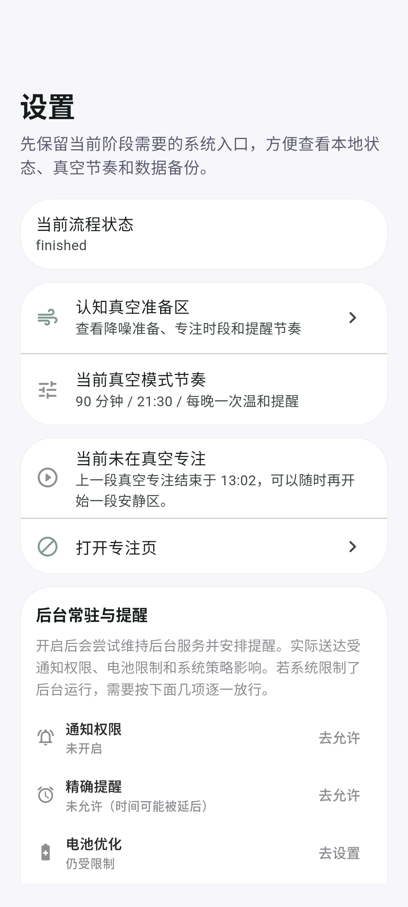
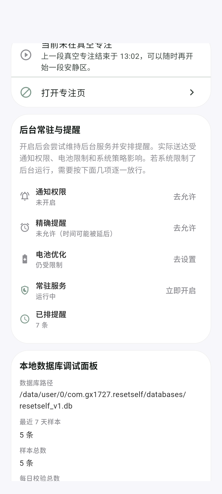
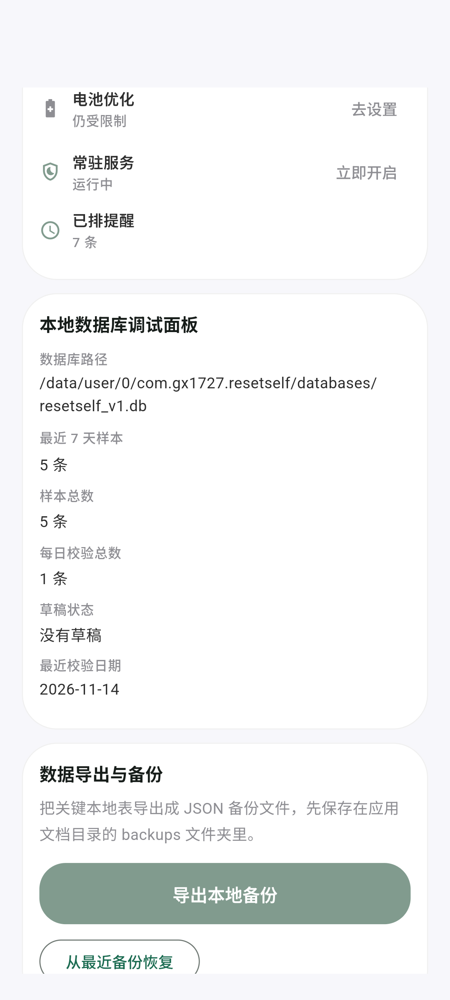
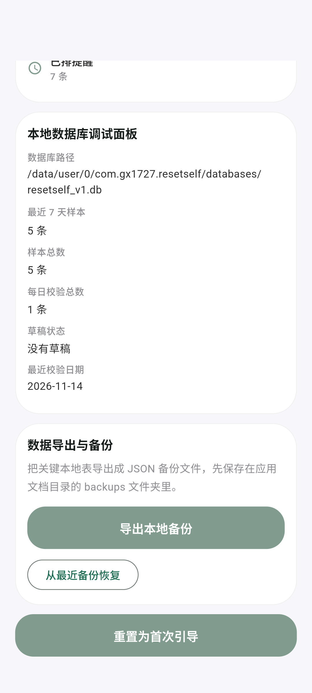
页面结构
- 当前流程状态：显示档案状态（未初始化 / 已初始化 / 已完成重构）。
- 真空模式：一行进入认知真空准备区，一行显示当前节奏（如 90 分钟 / 21:30 / 每晚一次温和提醒）。
- 真空专注：显示当前是否正在专注与上一段结束时间，点「打开专注页」进入
/vacuum/focus。 - 后台常驻与提醒：逐项放行，并显示已排提醒条数。
- 本地数据库调试面板：数据库路径、最近 7 天样本、样本总数、每日校验总数、草稿状态、最近校验日期。
- 数据导出与备份：导出 / 恢复本地 JSON 备份，并显示最近导出或恢复的文件、内容与时间。
- 重置为首次引导：把应用恢复到第一次打开的引导状态。
后台常驻与提醒的五个状态行
| 项目 | 状态取值 | 按钮 |
|---|---|---|
| 通知权限 | 已开启 / 未开启 | 去允许 |
| 精确提醒 | 已允许 / 未允许（时间可能被延后） | 去允许 |
| 电池优化 | 已豁免 / 仍受限制 | 去设置 |
| 常驻服务 | 运行中 / 未运行 | 立即开启 |
| 已排提醒 | N 条 | — |
14. 走完一圈之后
把上面的流程走完一遍，首页就会变成一个真正在用的仪表盘：身份与最小启动行动常驻在顶部，今天的校验已经记下，反愿景、日间观察、行动反馈、最近样本、本周摘要与真空节奏都在同一页里。
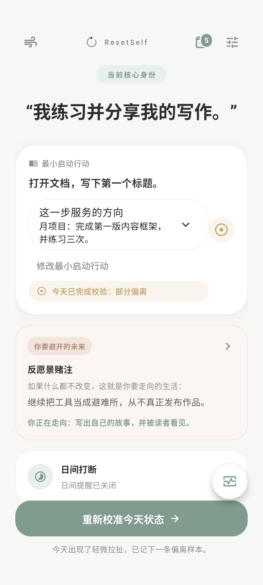
之后每天只需要重复最轻的两步：白天被打断时记录一次观察，晚上做一次今日校验或行动反馈。样本积累到一定数量后，惯性样本库里的高频偏离模式会开始显出形状；当身份或方向需要调整时，再从重构归档重新进入晚间综合。
四、数据、备份与隐私
全部数据保存在手机本地的 SQLite 数据库里，不上传云端。
数据库文件为 resetself_v1.db，在应用私有目录 /data/user/0/com.gx1727.resetself/databases/ 下，路径可以在设置页的调试面板中直接看到。
核心数据表
| 表 | 存放内容 |
|---|---|
| user_profile | 当前身份、最小启动行动、流程状态、当前聚焦的身份锚点 |
| restructure_morning_answer | 晨间 14 问的原始回答（探索原稿） |
| morning_archive | 归档的晨间原稿与「待回看」标记 |
| restructure_draft | 晚间向导未提交的草稿（含修改原因） |
| restructure_record | 每次晚间综合的 11 项回答与调整原因，最新一次标记为 is_latest |
| limiting_belief | 内部模式／限制性信念及其触发场景 |
| identity_anchor | 身份库中的身份锚点 |
| daily_checkin | 每日校验记录（每天一条，同日覆盖） |
| inertia_sample | 惯性样本：每日偏离、SOS、首次重构、真空专注、日间观察 |
| action_feedback | 行动反馈闭环记录（尝试 / 发生 / 认识 / 调整）与当时的方向快照 |
| action_change | 最小启动行动的修改历史（原动作、新动作、原因、时间） |
| exploration_state | 当前探索的起始时间状态 |
| yearly_archive | 年度身份快照、信念快照、样本总量、校验稳定度 |
| vacuum_mode_settings | 真空模式偏好（专注时长、降噪、提醒、日间打断时点） |
| vacuum_focus_state | 当前真空专注状态（是否进行中、起始时间） |
备份与恢复
- 导出本地备份：把关键本地表导出成 JSON，保存在应用文档目录的
backups文件夹中，例如resetself_backup_YYYYMMDD_HHMMSS.json。导出成功会提示「本地备份已导出到：…」。 - 从最近备份恢复：读取该目录中最近的一个备份文件并覆盖回数据库，恢复后首页与设置会自动刷新，成功提示「已从最近备份恢复：…」。
五、常见问题
Q1 我中途退出了向导，写的内容还在吗？
在。晨间探索与晚间向导都会自动保存草稿，页面底部会显示「正在保存草稿…」「当前内容已保存」等状态；再次进入会接着上次的位置继续。右上角的稍后继续也是退出而不丢失。
Q2 晨间写不完怎么办？
可以先跳过答不出的题，也可以把某题标成待回看，之后再补。晨间原稿和「待回看」标记都会保存下来，晚间可以随时「回看晨间原稿」。回答属于探索原稿，性质和晚间综合的结论是分开存放的。
Q3 想改上一次的回答，会清空我的数据吗？
不会。在重构归档页点重新做一次身份重构，选择修改上一次的回答，只会更新这一次写下的内容，历史校验、样本与晨间原稿都保留。
Q4 今天的校验选错了怎么办？
回到首页点重新校准今天状态重新选择即可，同一天只会保留最新一次记录。
Q5 日间打断的提醒没有出现？
先确认认知真空准备区里「日间打断」是开启状态，再到设置页「后台常驻与提醒」逐项放行通知权限、精确提醒、电池优化与常驻服务。系统限制后台运行时会延后或吞掉提醒；即使通知没响，你也可以随时手动进入日间打断页记录一次观察。
Q6 「完全偏离」记录会不会让统计很难看？
不会影响你使用。偏离在系统里等于「迭代数据」，它只会作为一条样本出现，并影响本周摘要的统计口径，不会扣分、不会锁定任何功能。
Q7 晨间原稿归档会不会把当前内容弄丢？
不会。归档是独立保留一份副本，当前稿和草稿都还在；归档后也可以随时「恢复为当前稿」，恢复前会有二次确认。
Q8 换手机后数据还在吗？
数据只在本机，需要先在设置页导出备份并保存好 JSON 文件，再在新设备上把备份放回应用文档目录的 backups 文件夹，使用「从最近备份恢复」还原。
Q9 我想彻底从头开始？
两个入口：设置页重置为首次引导；或重构归档页彻底清空重建（此项会二次确认）。两者都会清空本地数据。
六、附录
附录 A：页面与路由对照
| 页面 | 路由 | 进入方式 |
|---|---|---|
| 启动页 | /bootstrap | 应用启动 |
| 欢迎页 | /welcome | 未完成首次重构时的默认页 |
| 认知真空准备区 | /vacuum | 欢迎页 / 首页左上角 / 设置页 / 日间打断页 |
| 真空专注页 | /vacuum/focus | 准备区或首页真空节奏卡 / 设置页 |
| 晨间探索 | /restructure/morning | 欢迎页 / 准备区 / 重构归档页 |
| 晚间综合向导 | /restructure/setup | 晨间保存后的弹层 / 归档页（?mode=edit 用于修改上一次回答） |
| 首页 | /home | 已完成首次重构后的默认页 |
| 每日校验 | /checkin | 首页主按钮 |
| 日间打断 | /interrupt | 首页日间打断卡 / 晨间保存后的弹层 |
| 行动反馈 | /feedback | 首页行动反馈卡 |
| SOS 急救 | /sos | 首页右下角悬浮按钮 |
| 惯性样本库 | /insights | 首页右上角归档图标及各类统计卡 |
| 重构归档 | /restructure | 首页反愿景赌注卡 |
| 设置 | /settings | 首页右上角设置图标 |
附录 B：惯性样本的来源类型
| 来源 | 产生场景 | 样本标签 |
|---|---|---|
| manual | 完成一次晚间综合 | 首次重构 |
| daily_checkin | 每日校验选择偏离 | 部分偏离 / 完全偏离 |
| sos | SOS 急救提交 | SOS 急救 |
| vacuum_focus | 结束一段真空专注 | 真空专注 |
| daytime_interrupt | 记录一次日间观察 | 成长性行为 / 逃避性行为 / 其他／待核对 |
附录 C：产品适配与后续能力
与原文相比，ResetSelf 明确标注了哪些是产品适配或扩展：最小启动行动周回顾专注工具，以及面向日程的示例时点。认知真空准备区里还列出了尚未接入的三项能力：系统级专注权限引导、重构时段建议与专注提醒、首页回流与专注状态同步。
附录 D：本手册截图的生成方式
使用当前仓库代码构建 debug 版本安装到 Android 模拟器 Medium_Phone（1080×2400，420dpi，包名 com.gx1727.resetself），由 integration_test 驱动完整流程：在测试内对根 RepaintBoundary 截图并写入设备应用私有目录，宿主机再通过 adb exec-out run-as 持续拉取，因此每一张截图都与真实交互一一对应。截图里的身份、信念与样本内容均为演示数据。